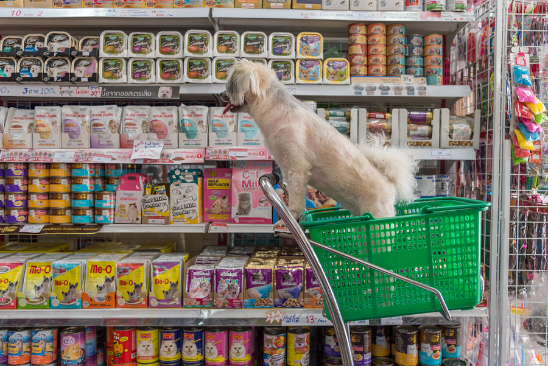

La tienda de mascotas o tienda de animales es un comercio al por menor dedicado a la venta de productos
para mascotas como alimentos, juguetes, snacks, cepillos, y accesorios para mascotas en general. Pueden
vender un determinado número de variedades de animales,incluyendo peces para acuarios caseros, pájaros
pequeños tales como periquitos, pequeños roedores como cobayas, hámsteres y reptiles pequeños tales como
lagartos y serpientes.

Cada vez es más habitual, dentro del comercio electrónico en lo que animales se refiere, tener a nuestra
disposición tiendas de animales en línea en la que la venta de productos puede llegar a ser mucho más
amplia gracias a la variedad de productos existentes en el mercado.